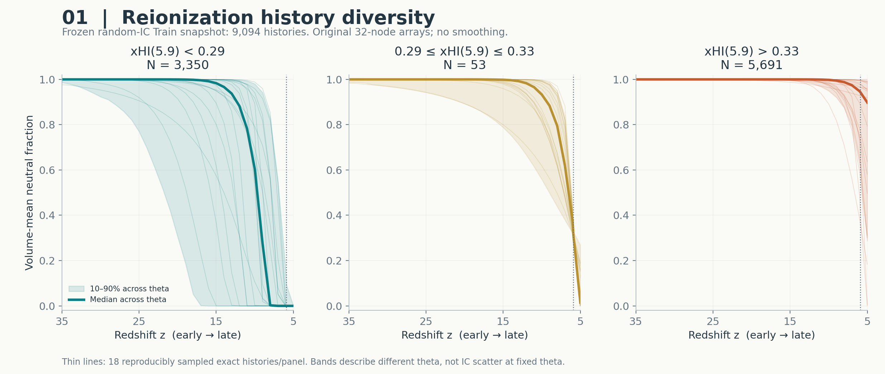
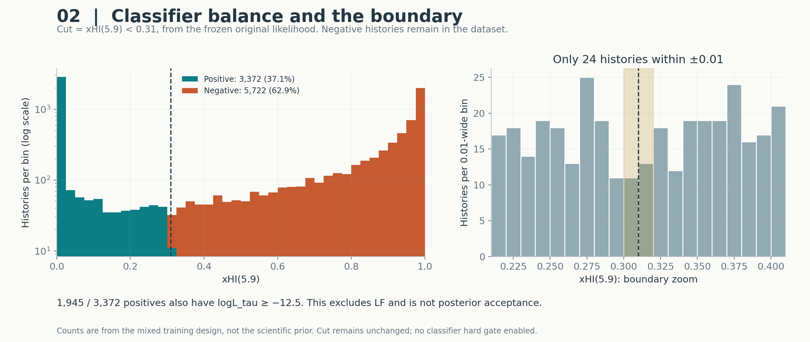
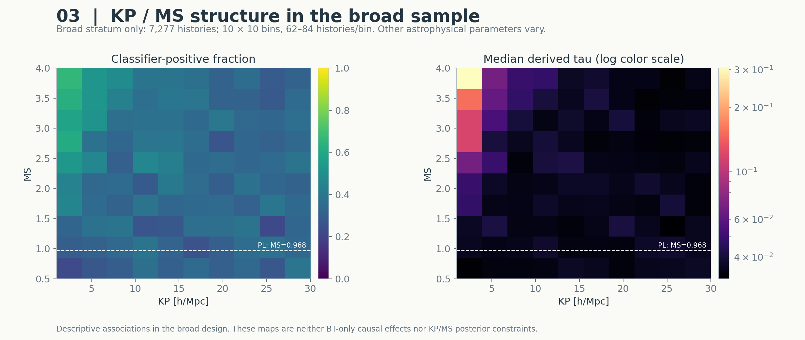
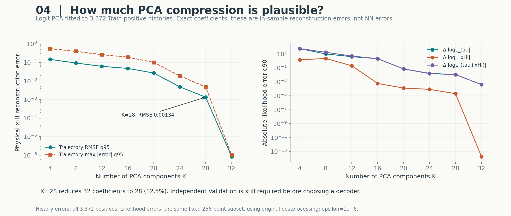
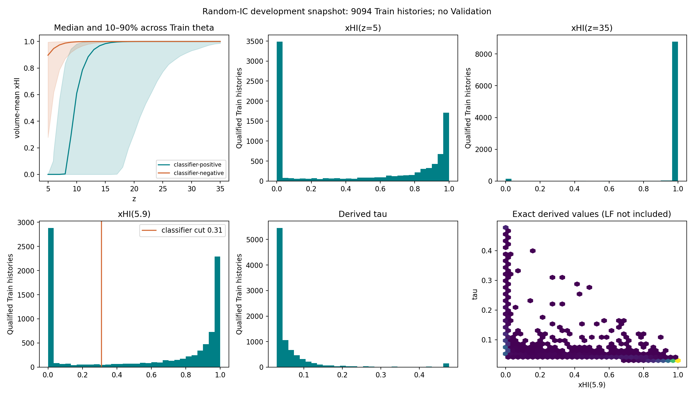
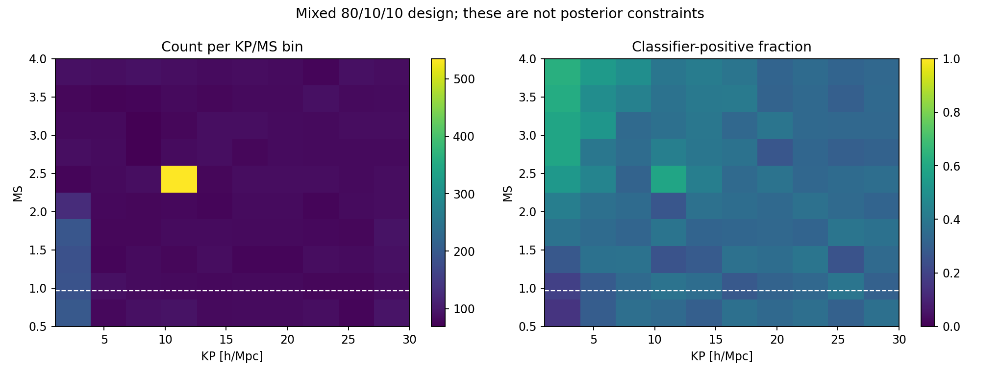
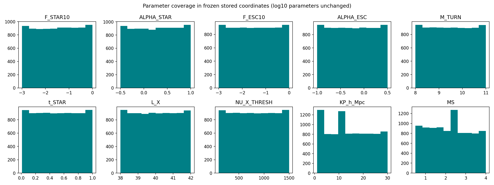
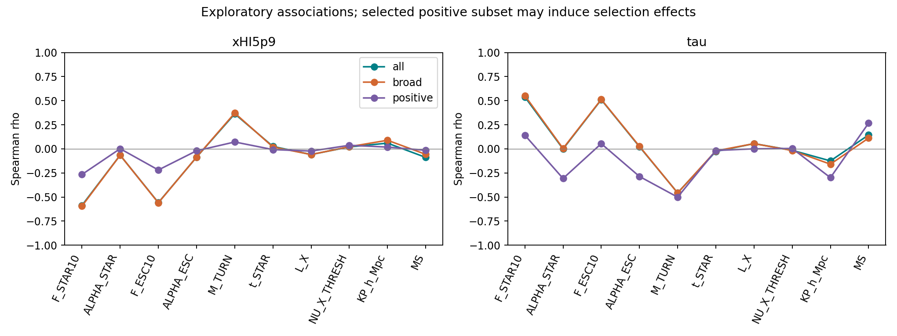
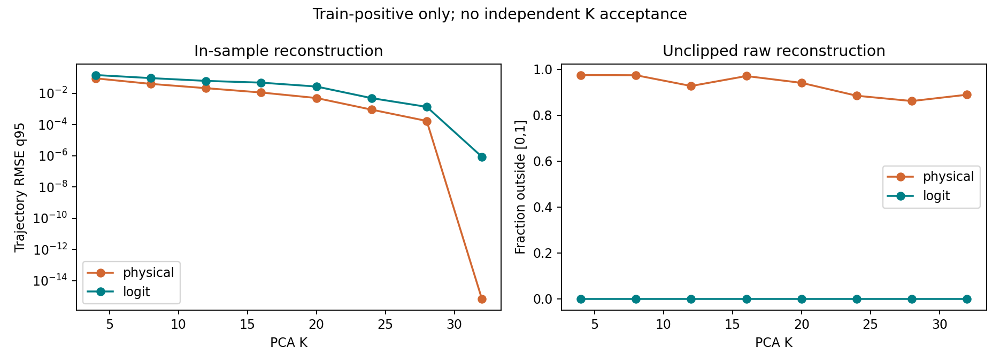

xHI：中性氢比例
接近 1：氢主要还未电离。接近 0：氢主要已电离。这里始终使用模拟器输出的体积平均比例。
BT HISTORY / RANDOM IC / DEVELOPMENT ANALYSIS
冻结快照：2026-10-13T23:54:32.738790+08:00 · Train only · Validation 0
3,372 positive / 5,722 negative。分类边界 ±0.01 只有24条。K=28 logit PCA 值得独立检验，但目前只有训练内重构结果。
这里主要检查数据的分布、样本覆盖和压缩误差。先看四张专题图，再看下面的补充统计。
这是一份固定在 9,094 条随机 IC Train 上的分析快照，后续新增数据不在这组图中。图中的数据分布和 PCA 重构，尚不能代表神经网络的独立预测精度。
接近 1：氢主要还未电离。接近 0：氢主要已电离。这里始终使用模拟器输出的体积平均比例。
z 越大，宇宙越早。第一张专题图从左到右是 z=35 → z=5，也就是从早到晚；其他图请按各自横轴刻度读。
τ 由原 tau_from_history / compute_tau 对 history 后处理得到。它不是网络单独预测的输出。
q95 表示约 95% 的样本误差不超过该值，q90 同理。这里按整条 history 统计，不把 32 个节点当成独立样本。




| Stratum | Qualified | Positive fraction |
|---|---|---|
| boundary | 908 | 41.08% |
| broad | 7,277 | 36.13% |
| continuous_ms | 454 | 20.04% |
| fixed | 455 | 61.32% |
10×10 KP/MS 网格全部有样本。比例来自混合训练设计，不代表 posterior。Negative histories 完整保留。





xHI(5)>0.01 的5,713条、xHI(35)<0.99的420条均为保留的有效history。只记录domain warning。两条数值失败保留原分母和参数。LF没有计算；这不是 LF+τ+xHI posterior。未更改IC、native、标签、分区或生产计划，未读取sealed labels。
在这份冻结快照中，随机 IC Validation 为 0。已有数据可以支持模型开发，但还需要独立验证 classifier 的漏判率、history 与 likelihood 误差，以及最终 posterior。数据覆盖、PCA 重构和神经网络泛化精度分别回答不同问题。